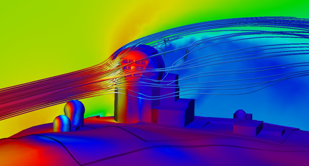

Simulation
  |
|
|
Aims
- Describe what a simulation is
- Describe benefits and limitations of simulations
- Describe how simulation fits in
Reuse

This work is licensed under a Creative Commons Attribution-NonCommercial-ShareAlike 4.0 International License.
http://creativecommons.org/licenses/by-nc-sa/4.0/deed.en_USThis means you are free to copy and redistribute the material and adapt and build on the material under the following terms: You must give appropriate credit, provide a link to the license and indicate if changes were made. If you adapt or build on the material you must distribute your work under the same license as the original.
Note that this presentation contains images owned by others. Please seek their permission before reusing these images.
What is a Simulation?
A simulation attempts to model a system.
The system could be an experiment, real world object or a concept.
Why?
Let's try to build a small tower
Using the blocks build a tower which is as tall as possible
Why?
Now, how stable is your tower?
How can we test this?
Are there any problems?
Why?
There are many reasons to do simulations:
- Quick and Reconfigurable Testing
- Quicker and more varied design of experiments and structures
- Explain the behaviours of systems - and do we understand how they work?
Why?
- Try out things that are not possible to experiment on
- Too Big or Slow (Galaxies, Stars, Planets)
- Too Small or Quick (Atoms, Molecules)
- Safety - systems can be dangerous to work with
- Cost
When?
Simulation can form part of the experiment cycle:
- help develop the experiment design
- generate expected results - does our theory match what happens?
- explain observed behaviour - can we take results and behaviours and create an explanation?
Some Types
Simulations have different forms including:
- Dynamic and equation based
- Agent and rule based
A Simulation
A Shop Queue
You have a number of customers and checkouts
Each customer has a number of items
Each checkout can scan a number of items per minute
How could we determine the best configuration of checkouts for a number of customers
Benefits
Can speed up development of new products and theories - compress time
Can improve cost effectiveness
Study complex or dangerous systems
Can allow study of parallel ideas more effectively
Limitations
Complex simulations can require large computer resources to run.
It is not the real world - simulations can only approximate the real world
Requires understanding of how the system works
Rules and equations can be complex to design - interactions may be problematic